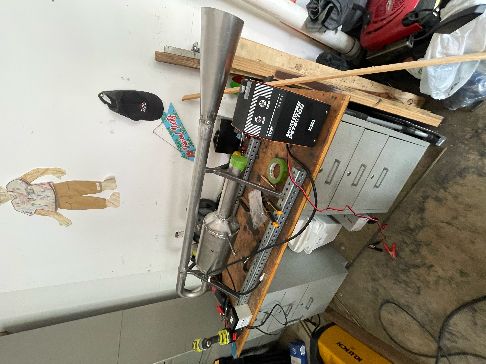
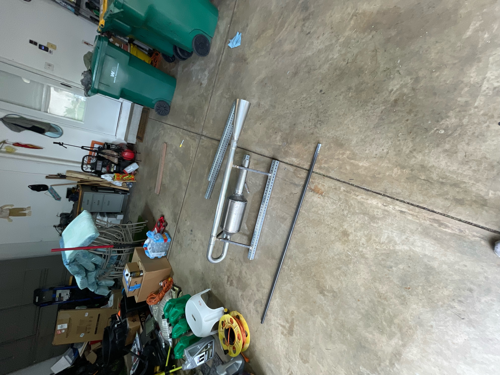

Manual Machining
Manual Knee Mill
Teach students the purpose, controls, setup considerations, workholding awareness, tool engagement, and safe operating approach for manual milling operations.
Manufacturing Instruction · Machine Safety · Student Support · Hands-On Fabrication
Teaching and supporting students in a hands-on manufacturing lab environment involving manual machining, turning operations, CNC demonstrations, sheet metal equipment, GMAW welding, machine safety, troubleshooting, and design-to-fabrication guidance.
Role Overview
As a Design and Manufacturing Lab Teaching Assistant, I support students as they learn how to safely and effectively use manufacturing equipment to build real hardware. My role includes explaining machine purpose, demonstrating proper technique, helping students understand setup decisions, and troubleshooting issues that come up during fabrication.
I help students connect the design side of engineering to the manufacturing side. That means guiding them through questions such as how a part should be held, what process is appropriate, what safety concerns matter, how material behavior affects fabrication, and how to move from an idea to a finished part.

The goal of my TA role is to help students become more confident, capable, and safe when working in a manufacturing environment. I teach students how to approach equipment thoughtfully rather than just memorizing steps, emphasizing setup, workholding, tool engagement, material behavior, safety, and the connection between design intent and fabrication method.
This role has strengthened my own manufacturing judgment because teaching a process requires being able to explain not only what to do, but why it matters. I have to break down machine operation, safety, and troubleshooting in a way that students can understand and apply during their own project work.
Good lab instruction is not just showing someone which lever to pull. It is helping them understand the process well enough to make safer, smarter manufacturing decisions on their own.
Introduce machine purpose, basic controls, safety concerns, and the role of each process.
Show proper setup, operation, welding technique, tool engagement, and safe handling.
Help students think through workholding, process selection, and design-to-fabrication decisions.
Support students when parts, setups, or fabrication steps do not go as expected.
Emphasize safe habits, repeatable processes, and engineering judgment in the lab.
Equipment and Processes

Teach students the purpose, controls, setup considerations, workholding awareness, tool engagement, and safe operating approach for manual milling operations.

Support student understanding of lathe operation, workholding, tool engagement, cylindrical part features, facing, turning, drilling, and safe turning practices.
Demonstrate CNC mill operation for students while maintaining direct control of the machine. I use this to explain CNC workflow, machine safety, setup awareness, and the difference between manual and automated machining.

Teach students how press braking is used to form sheet metal parts, including bend planning, safe operation, tooling awareness, and how geometry changes during forming.

Support students using sheet metal cutting equipment while emphasizing measurement, material positioning, cutting safety, and preparation for downstream fabrication steps.

Introduce students to the welding area, demonstrate GMAW welding techniques, explain welding safety, and give students the opportunity to practice basic welding skills.
Capabilities
Explaining equipment purpose, setup logic, safety, process limitations, and practical manufacturing decisions to students.
Supporting manual milling, turning operations, CNC demonstrations, sheet metal forming, cutting processes, and GMAW welding practice.
Helping students understand how geometry, material choice, process selection, and workholding affect whether a design can become a real part.
Reinforcing safe lab habits, helping students diagnose fabrication issues, and supporting project work when parts or setups do not behave as expected.
Engineer’s Takeaway
Working as a Design and Manufacturing Lab Teaching Assistant has strengthened the way I think about engineering design. When students need help making a part, the important questions become practical very quickly: how will it be held, how will it be cut, how will it bend, how will it fit, and how can it be done safely?
This role has helped me develop both technical and communication skills. It has reinforced that engineering is not only about solving the problem yourself, but also about helping others understand the process well enough to solve problems with confidence.